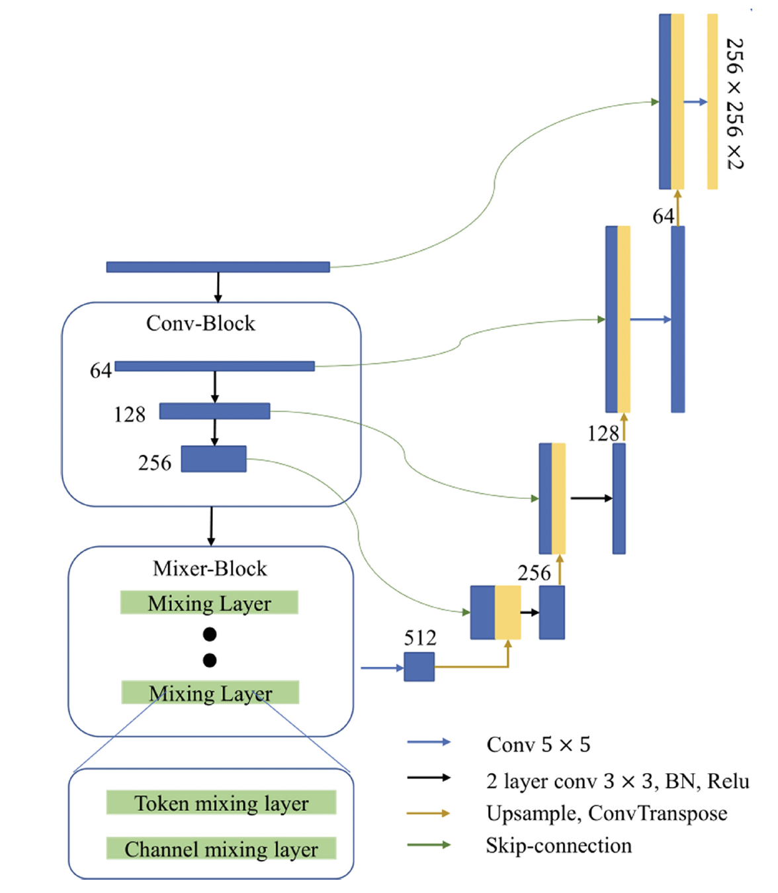
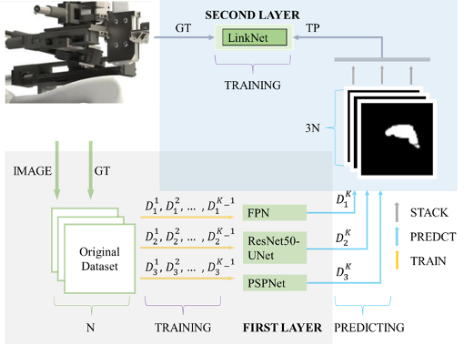
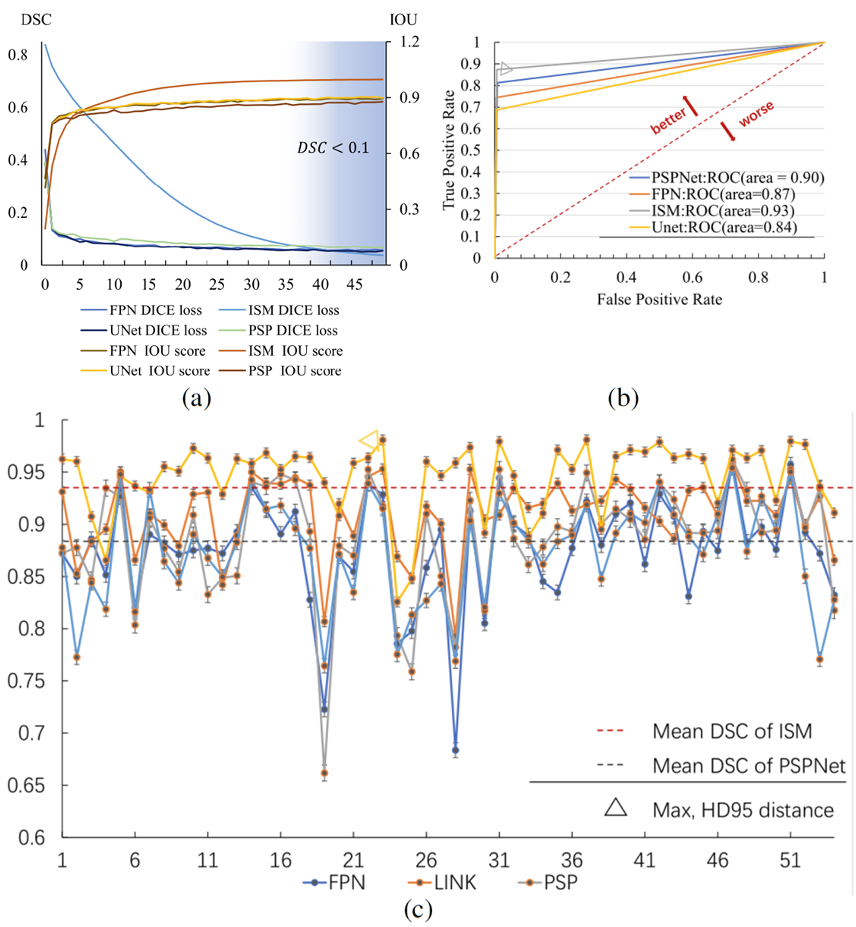

Robot Design
Our venipuncture robot features a 6-DOF compact mechanism designed for precise vascular access. The robot's structure is built around a reliable short transmission chain, primarily consisting of precision ball screws and Maxon motors, ensuring high mechanical efficiency and accuracy.
The motor system comprises six key components:
- Motors 1, 2, and 3 operate jointly for x-y plane movement
- Motor 4 determines the puncture angle
- Motor 5 controls needle movement along the y-direction
- Motor 6 advances the needle to the vein puncture point

A key feature is the 3-DOF Needle Module, which includes:
- A linear stage driven by a lead screw spindle
- A worm drive system for independent insertion angle control
- A self-locking rotational joint for safety
- Two ball screw mechanisms for precise needle movement
This design allows for accurate adjustment of puncture speed and dramatically improves puncture stability and needle tip positioning accuracy.
Vein Detection
Near Infrared Imaging
The robot employs Near Infrared (NIR) imaging technology for accurate vein detection. This non-invasive method allows for clear visualization of superficial veins, enhancing the robot's ability to identify suitable puncture sites.
We randomly select six NIR images as examples and show the vein segmentation and suitable puncture areas in Fig. 8. We propose a Dual-In-Dual-Out network with two-step learning and two-task learning to determine the suitable puncture area and angle from the NIR image inputs. A visual illustration of the proposed network is shown in Fig. 9. It contains two steps of training: first, it trains a Single-In-Single-Out network to segment the vein from the NIR image; second, it inputs both the NIR image and vein segmentation from the first step training into the Dual-In-Dual-Out network to regress the suitable puncture area and angle.
NIR results:
Five examples of the suitable puncture area regression by the four methods are shown in Fig. 10. We can visually see that both the Dual-In-Single-Out and Dual-In-Dual-Out network can distinguish between the suitable and non-suitable puncture area better than the Single-In-Single-Out and Single-In-Dual-Out network, indicating the importance and value of bringing the vein segmentation into the network's input. For the regression of suitable puncture areas and angle, the mean and std DSC are shown in Table Ⅰ and Table Ⅱ.
Ultrasound Imaging
Complementing the NIR system, ultrasound technology is used for precise depth estimation and longitudinal vein imaging. The ultrasound device (st-1c transducer, frequency 7.5MHz) provides high-resolution images of vein cross-sections, enabling accurate calculation of puncture depth.
An illustration of the dataset is shown in Fig. 11, where green boxes illustrate the veins, yellow boxes illustrate the vein shadow and red boxes represent the vessel edges. In previous studies, UNet, FPN, and other models have shown good performance in image segmentation. To merge the advantages of these deep-learning neural networks, our model integrates multiple image segmentation networks. Through stacking methods and feature image coding, we propose the Integrated Segmentation Model (ISM), offering high precision for vein segmentation from ultrasonic images. As shown in Fig. 12, the overall structure of ISM includes two layers. The first layer is composed of three sub-models (FPN, PSPNet, and UNet, numbered as models 1, 2, and 3). The output result diagram of the first layer was used as the input training picture of the second layer. The second layer of the sub-model is composed of LinkNet, which takes the label picture (GT) of the original data set as the recognition target.
As can be seen in Table II, the proposed ISM demonstrates its superiority over traditional models in terms of the three indicators, namely Dice-Similarity-Coefficient (DSC), Hausdorff-Distance (HD95) and Intersection-Over-Union (IOU). The ISM model achieved significant improvements in multiple indicators: its DSC value increased by about 6 %, reaching 94.62 %, and the IOU value increased by about 11%, in complex samples. Finally, a clear puncture point is calculated through the connection domain algorithm. Experimentally, the success rate of selecting the suitable vein for puncture is 99.21%.
Fig. 14. Training procedure of the FPN, UNet, PSPNet and ISM: (a) Dice Loss curve of FPN, UNet, PSPNet, ISM. (b) ROC-AUC curve of FPN, UNet, PSPNet, ISM of testing picture. (c) The DSC curve of vein segmentation results using different models: FPN, UNet, PSPNet, LinkNet, ISM.
Control System
The robot's control system integrates data from both NIR and ultrasound imaging to guide the needle with high precision. Advanced algorithms process the imaging data in real-time, determining the optimal puncture site, angle, and depth.
The system allows for dynamic adjustment during the procedure, compensating for any patient movement or vein deformation. This ensures a high success rate and minimizes the risk of complications.

Experimental Results
Our experiments demonstrate the high accuracy and reliability of the venipuncture robot. With a success rate of 98.24% in simulated tests and a maximum puncture error of 1.79mm, the robot shows promising results for clinical applications.